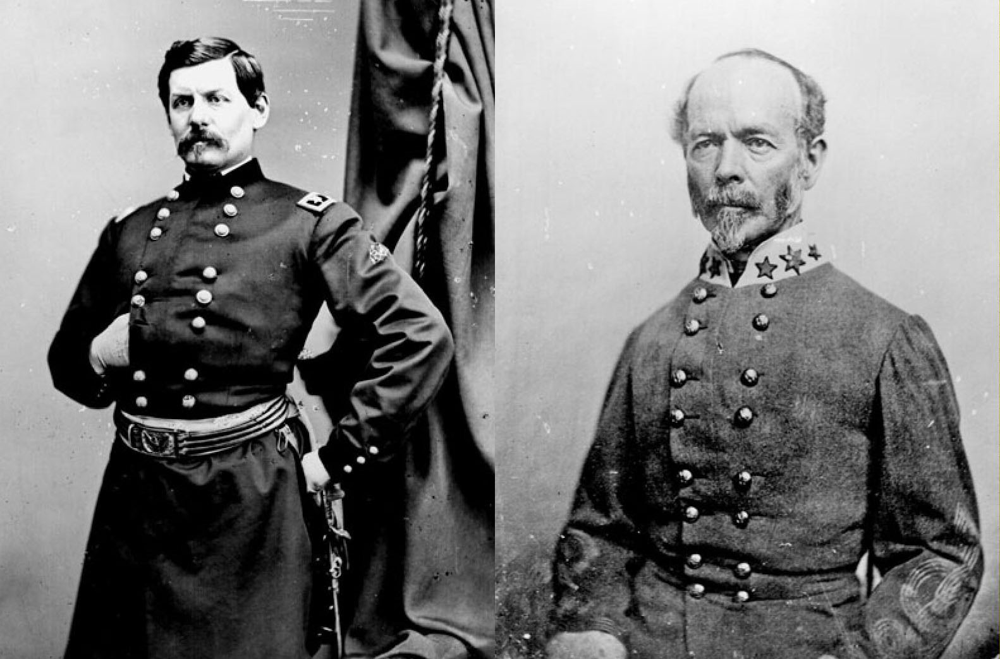
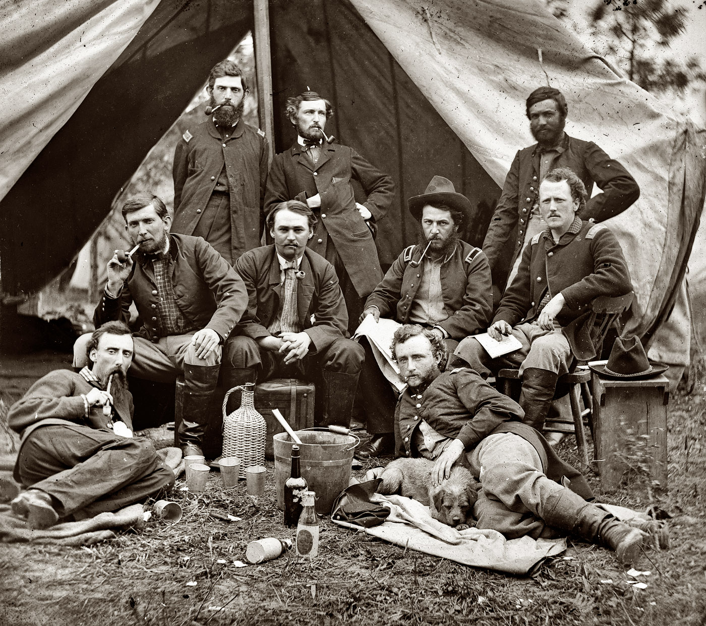
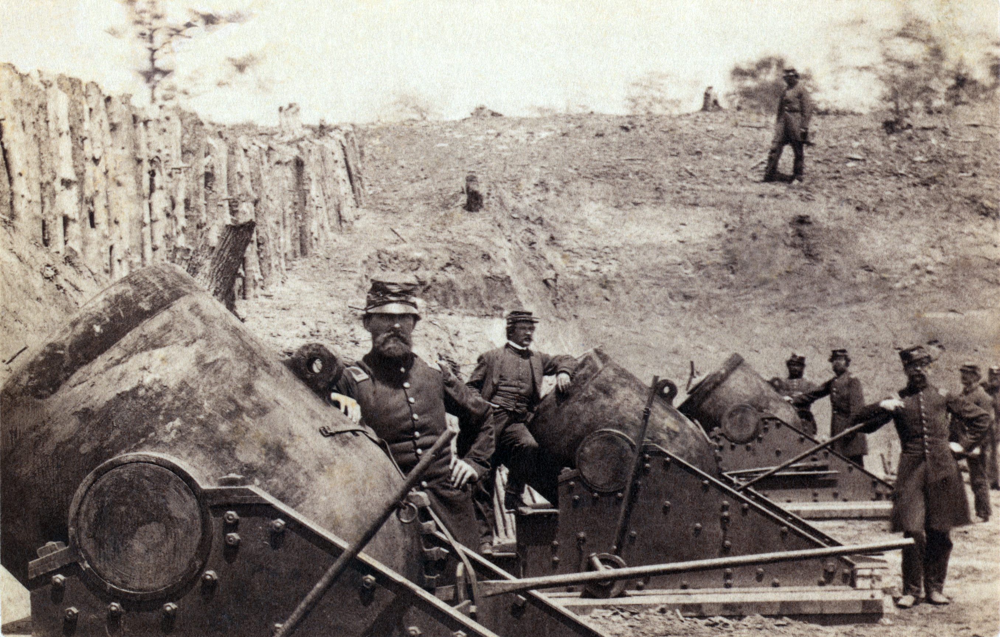

|
The winter of 1861-1862 passed without significant action
in Virginia. The principal Union and Confederate armies,
commanded respectively by George B. McClellan and Joseph E.
Johnston, remained near Manassas Junction, where they had
created extensive opposing lines. McClellan, who functioned
as the Union general-in-chief as well as commander of the
Army of the Potomac, devised a plan to turn Johnston's flank
by moving troops to the Rappahannock River by ship and
taking Fredericksburg. That would isolate Johnston in
northern Virginia, forcing him to attack McClellan in order
to reach Richmond. McClellan delayed his plans, however,
until a frustrated Lincoln finally ordered him to commence
his campaign on February 22, 1862--George Washington's
birthday. When that date came and went without a movement
|

Maj. Gen. George B. McClellan
and Gen. Joseph Johnston
|
and the first days of March slipped by, Lincoln removed
McClellan as general-in-chief.
Reduced to army command only, McClellan changed his plans
when word arrived that Johnston had retreated to the
Rappahannock line. On March 17, the Army of the Potomac
began a larger turning movement toward Fort Monroe, situated
at the tip of the finger of land between the York and James
Rivers known as the Peninsula. By the end of April,
Confederate planners faced a range of threats in Virginia:
the bulk of the Army of the Potomac lay on the lower
Peninsula, with another 30,000 Federals under Irvin McDowell
near Fredericksburg, 15,000 under Nathaniel P. Banks in the
lower Shenandoah Valley, and nearly 10,000 under John C.
Frémont in the Allegheny Mountains west of the Valley.
Initially, only 17,000 southern troops under John Bankhead
Magruder, positioned between Yorktown and the Warwick River,
were available to resist McClellan's movements on the
Peninsula.
The Confederates soon concentrated more of their forces
near Richmond and they mounted a diversion in the Shenandoah
Valley designed to prevent reinforcement of McClellan.
Johnston shifted his army to the Peninsula, where he
contested a slow Union advance toward the capital.
Confederates gave up Yorktown on May 3 after a virtually
bloodless month-long siege. They continued their withdrawal
after the battle of Williamsburg on May 5, a hard-fought
action that resulted in 2,200 Union and 1,750 Confederate
casualties. The port of Norfolk, with its immense naval
installations, capitulated on May 9.
As the forces under Johnston and McClellan moved slowly
toward Richmond, each striving to gain advantage over the
other, the ironclad C.S.S. Virginia (popularly called the
Merrimac), which had fought the Union ironclad U.S.S.
Monitor to a draw in their famous duel at Hampton Roads on
March 9, was destroyed on May 11. "No one event of the
war," remarked Confederate ordnance chief Josiah Gorgas from
his post in Richmond, "created such a profound sensation as
the destruction of this noble ship." Heavy rains drenched
the Peninsula during May, adding to Confederate gloom over
the Virginia and affording McClellan a good excuse for
making little headway. The end of the month found the two
armies--more than 100,000 Federals and about 70,000
Confederates--arrayed opposite one another along the
Chickahominy River just east of Richmond.
Many Confederates believed Johnston was giving up too
much ground without a serious fight. A North Carolina
diarist had a typical reaction, pointedly contrasting
"Stonewall" Jackson's accomplishments in the Shenandoah
Valley with Johnston's performance: "Jackson ... is the only
one of our generals who gives the enemy no rest, no time to
entrench themselves. Matters before Richmond look gloomy to
us out siders. McClellan advances, entrenching as he comes.
Why do we allow it?"
The situation at Richmond looked grim for the
Confederates by the end of May. Having retreated to within
about five miles of the capital, Johnston understood that he
must deliver a blow. He and McClellan had remained
relatively inactive during much of Jackson's Valley
campaign, but the Confederates could retreat no further
without reaching the defensive works of Richmond and
engaging in a siege that inevitably would favor McClellan.
At the end of May, Johnston detected an opening. McClellan's
army was divided by the Chickahominy River, with two corps
isolated south of its rain-swollen banks. Johnston attacked
the exposed portion of the Federal host on May 31 in the
battle of Seven Pines (also called Fair Oaks). The only
full-scale engagement between McClellan and Johnston on the
Peninsula, Seven Pines lasted two days. Poor coordination,
a confused grasp of local terrain, and other factors plagued
the southern army in a contest that ended in tactical
stalemate. More than 6,000 Confederates and 5,000 Federals
fell in the two days, and the southern commander Johnston
suffered a severe wound in the chest. On June 1, Jefferson
Davis named Robert E. Lee to succeed Johnston. Thus did the
man who would become the greatest Confederate general step
into the limelight.
This change of leadership occurred as George B. McClellan
and his Army of the Potomac, which numbered more than
|

General Fitz John Porter and his staff during the Peninsular Campaign.
Reclining, on the right, is George Armstrong Custer, who would become the youngest general
in the Civil War.
|
100,000 men, approached the climax of their grand offensive
against the southern capital. Although Lee later achieved a
towering reputation, news of his appointment provoked
widespread concern across the Confederacy. A North Carolina
woman gave voice to a common evaluation of Lee: "I do not
much like him, he 'falls back' too much..."
The next five weeks proved Lee's doubters wrong. No
general exhibited more daring than the new southern
commander, who believed the Confederacy could counteract
northern superiority in numbers by seizing and holding the
initiative. He spent June preparing for a supreme effort
against McClellan. When "Stonewall" Jackson's command from
the Shenandoah Valley and other reinforcements arrived,
Lee's army, at 90,000 strong, would be the largest ever
gathered by the South. By the last week of June, the Army
of the Potomac was divided by the Chickahominy River,
two-thirds of its strength south of the river and one-third
north of it. Lee hoped to crush the portion north of the
river then turn against the rest. Confederates repulsed a
strong Union reconnaissance against their left on June 25,
opening what became known as the Seven Days battles and
setting the stage for Lee's offensive.
Heavy fighting began on 26 June at the battle of
Mechanicsville and continued for the next five days. Lee
consistently acted as the aggressor but never managed to
land a decisive blow. At Mechanicsville, he expected
Jackson to strike Union general Fitz John Porter's right
flank. The hero of the Valley failed to appear in time,
however, and A.P. Hill's Confederate division launched a
useless frontal assault about mid-afternoon. Porter
retreated to a strong position at Gaines's Mill, where Lee
attacked again on the 27th. Once again Jackson stumbled, as
more than 50,000 Confederates mounted savage attacks along a
wide front. Late in the day, Porter's lines gave way, and
he withdrew across the Chickahominy to join the rest of
McClellan's army. Jackson's poor performance, usually
attributed to exhaustion verging on numbness, joined poor
staff work and other factors in allowing Porter's exposed
portion of McClellan's army to escape.
In the wake of Gaines's Mill, McClellan changed his base
from the Pamunkey River to the James River, where northern
naval power could support the Army of the Potomac. Lee
followed the retreating McClellan, seeking to inflict a
crippling blow as the Federals retreated southward across
the Peninsula. After heavy skirmishing on June 28, the
Confederates mounted light attacks on the 29th at Savage's
Station and far heavier ones at Glendale (also known as
Frayser's Farm) on the 30th. Stonewall Jackson played
virtually no role in these actions, as time and again the
Confederates failed to act in concert.
By July 1, McClellan stood at Malvern Hill, a splendid
defensive position overlooking the James. Lee resorted to
unimaginative frontal assaults that afternoon. Whether
irritated at lost opportunities or driven by his natural
combativeness, he had made one of his poorest tactical
decisions. As evening fell, more than 5,000 Confederate
casualties littered the slopes of Malvern Hill. Some of
McClellan's officers urged a counterattack against the
obviously battered enemy; however, "Little Mac" retreated
down the James to Harrison's Landing, where he awaited Lee's
next move and issued endless requests for more men and
supplies.
Casualties for the Seven Days were enormous. Lee's
losses exceeded 20,000 killed, wounded, and missing, while
McClellan's surpassed 16,000. Gaines's Mill, where combined
losses exceeded 15,000, marked the point of greatest
slaughter. Thousands of dead and maimed soldiers brought
the reality of war to Richmond's residents. One woman wrote
"death held a carnival in our city. The weather was
excessively hot. It was midsummer, gangrene and erysipelas
attacked the wounded, and those who might have been cured of
their wounds were cut down by these diseases."
The campaign's importance extended far beyond setting a
new standard of carnage in Virginia. Lee had seized the
initiative, dramatically altering the strategic picture by
dictating the action to a passive McClellan. Lee's first
|

Federal mortar guns during the
Peninsular Campaign.
|
effort in field command lacked tactical polish but
nevertheless brought great rewards. The Seven Days saved
Richmond and uplifted a Confederate people depressed by bad
military news from other theaters. On the Union side, the
campaign dashed expectations of victory that had mounted
steadily as northern armies in Tennessee and along the
Mississippi River won a string of successes. McClellan's
failure also deepened northern political divisions, clearing
the way for Republicans to implement policies that would
strike at slavery and other rebel property. The end of the
rebellion had seemed to be in sight when McClellan prepared
to march up the Peninsula; after Malvern Hill, few failed to
see that the war would continue in a more all-encompassing
manner. "We have been and are in a depressed, dismal, . . .
state of anxiety and irritability", wrote a perceptive New
Yorker after McClellan's retreat. "The cause of the country
does not seem to be thriving just now".
The campaign also underscored the degree to which events
in the Virginia theater dominated perceptions about the
war's progress. Despite enormous northern achievement in
the western campaigns, most people North and South, as well
as observers in Britain and France, interpreted the Seven
Days as evidence that the Confederacy was winning the war.
Lincoln wrote about this phenomenon in early August,
complaining that "it seems unreasonable that a series of
successes, extending through half-a-year, and clearing more
than a hundred thousand square miles of country, should help
us so little, while a single half-defeat should hurt us so
much." Lincoln did not exaggerate the impact of McClellan's
failure. Taken overall, the ramifications were such that the
Richmond campaign must be reckoned one of the turning points
of the war.
Source: Joan Waugh, ed., Facts on File Encyclopedia of American
History: Civil War and Reconstruction, 1856 to 1869 (New York: Facts on
File, 2003), 267-270.
|